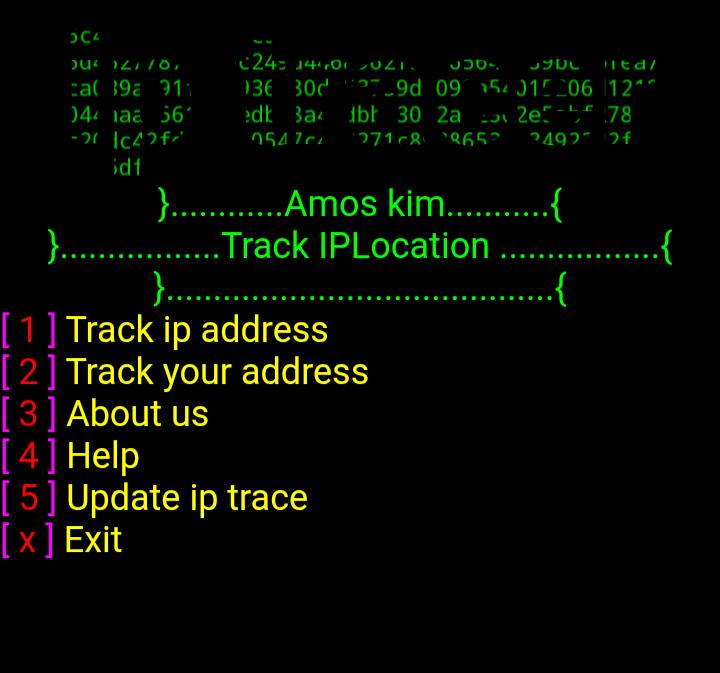
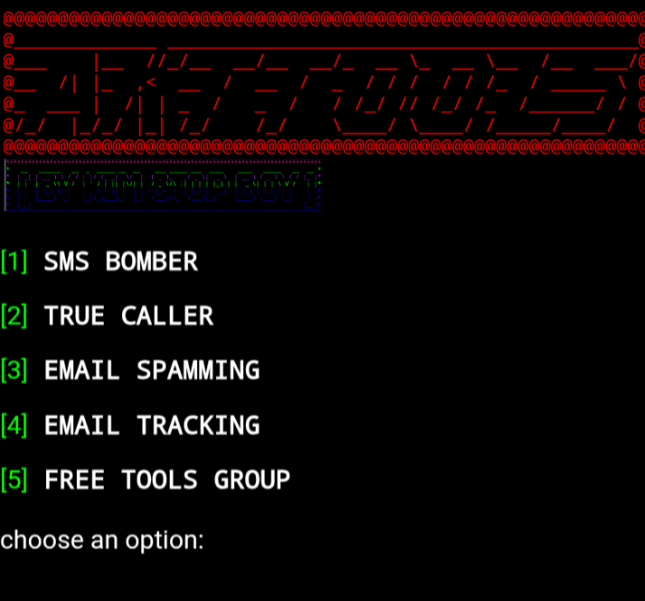
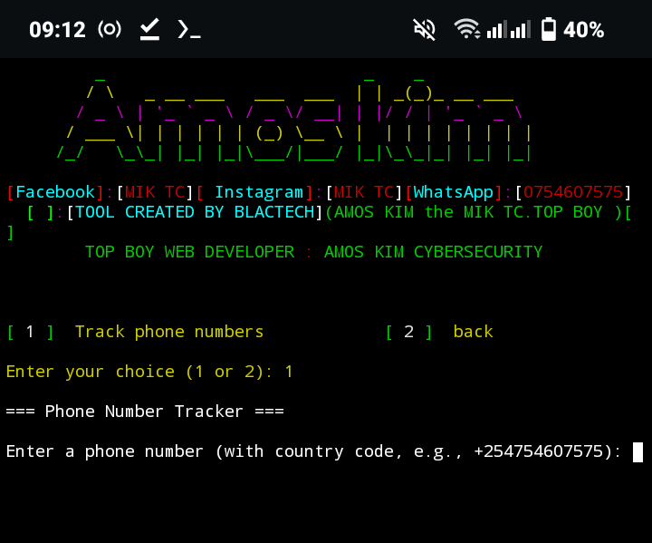

Welcome to the world of technology
AKT TOOLS is an open-source penetration testing and OSINT (Open-Source Intelligence) toolkit. It was introduced in Year 2025 by KIM &TOP BOY. It is designed to assist ethical hackers, cybersecurity analysts, and researchers in gathering information and performing basic offensive security operations."
Developer Information
git clone https://github.com/amoskim318/AKT-TOOLs.git
Created by: Amos kim and TOP BOY
Language: Python
Supported OS: Linux, Windows
🧰 Main Features (Modules)⤵️
1. AKT-TOOLS
◾️TikTok likes && viewers
◾️Tor premium
◾️ Instagram likes && followers
◾️ Facebook likes and followers
◾️Whatsapp viewers
◾️ Telegram premium
2. OSINT (Open Source Intelligence)
🔸 AKT TOOLS /
⚙️ Installation (Linux)
# 1. Clone the repository
🔗git clone https://github.com/amoskim318/AKT-TOOLS.git
# 2. Navigate to the folder
🔗cd ACT-TOOLS
# 3 Change permission
🔗 chmod +x install *
# 4. Run the tool
🔗 python AKT-TOOLS
🧪 Practical Usage Example
✅ Example 1: Instagram likes
Select option: [1] To increase your likes
🟫The AKT-TOOLS Will increase the likes upto 1000👍
✅ Example 2: Whatsapp viewers
Select option: [02]
🟫The AKT-TOOLS Will automatically view the post and unview but in the last part it will not unview it it will increase likes upto 1000👁️
Please like and share for more hacking tools subscribe to MIC TC and TOP BOY
2 IP-TRACKER
IP-TRACKER
🌐What is IP-TRACKER? "IP-TRACKER is an open-source penetration testing and OSINT (Open-Source Intelligence) toolkit. It was introduced in Year 2024 by KIM &TOP BOY It is designed to assist ethical hackers, cybersecurity analysts, and researchers in gathering information and performing basic offensive security operations."
Developer Information
git clone https://github.com/amoskim318/IP-TRACKER.git
Created by: Amos kim and TOP BOY
Language: Python
Supported OS: Linux, Windows
________________________________________________
🧰 Main Features (Modules)⤵️br>
1. Network Scanner
◾️Website Vulnerability Scanner
◾️Website Info & URL Scanner
◾️IP Scanner
◾️Port Scanner
◾️Pinger
2. OSINT (Open Source Intelligence)
🔸 IP-TRACKER / Dox Tracker
⚙️ Installation (Linux)
# 1. Clone the repository
🔗git clone https://github.com/amoskim318/IP-TRACKER.git
# 2. Navigate to the folder
🔗cd IP-TRACKER
# 3 Change permission
🔗 chmod +x install
# 4. Run the tool
🔗 ./install
________________________________________________
🧪 Practical Usage Examples
✅ Example 1: Scan for IP
Select option: [01] to scan your own IP I f you don't know the IP just held to your browser and type what is my ip
🟫Enter a IP and it will scan for common phone (location, time, city ,etc.)
✅ Example 2: Others IP
Select option: [02]
🟫Enter an IP address, and it will search for public leaks or data breaches.
Please like and share for more hacking tools subscribe to MIC TC and TOP BOY
⚠️ Important Legal Note
IP-TRACER is strictly for educational and ethical purposes. Unauthorized use for hacking or attacking real systems is illegal and punishable by law. Always get permission before testing any system.
_______________________________________________
AKT-TOOLS
AKT-TOOLS
Still in the process of advancing not completed yet you can contribute in creating the modules
Join us in the world 🌎 of programming
join us in the world 🌎 of programming
AMTOPKIM
AMTOPKIM
